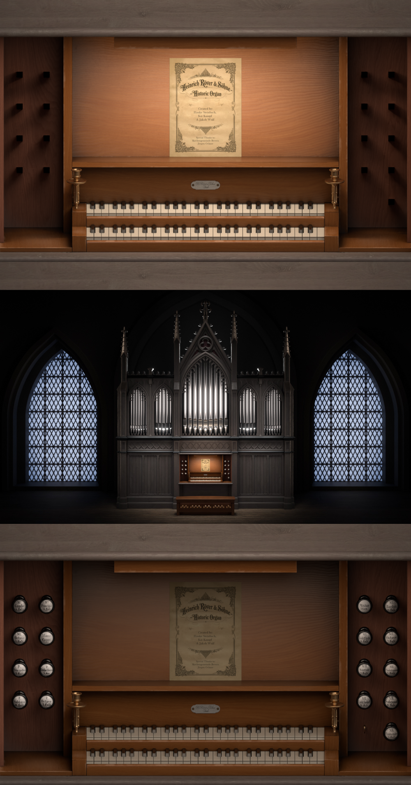
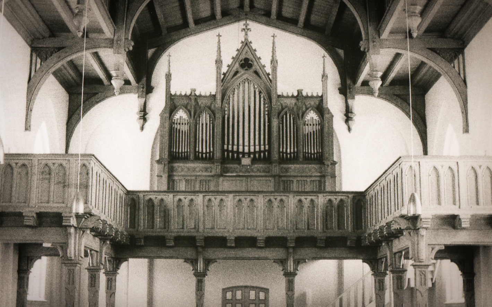

Historic Organ
Heinrich Röver & Söhne · Heilig-Kreuz-Kirche Bevern
Pull the stops.
Press play.
Click any register to activate it. Start the rank, and every selected stop sounds simultaneously. Add or remove registers while playing to shape the sound in real time, with the same 17 stops as the original console at Heilig-Kreuz-Kirche.

Designed for history.
17 Individual Registers
Every stop sampled in isolation, from the 16′ Subbass to the bright Mixtur III, giving you precise control over the full tonal range.
Multi-Microphone Capture
Multiple microphone positions document the natural room acoustics of Heilig-Kreuz-Kirche Bevern, preserving the spatial character of the instrument.
Cultural Preservation
The Röver organ is a late-romantic instrument at risk from age and limited restoration funds. This library is a permanent digital archive of its sound.
KONTAKT & Standalone
Available for Native Instruments KONTAKT and as a standalone app, with a custom GUI that replicates the original console, the same stop positions, the same wooden aesthetic.
Authentic Church Reverb
The natural reverberation of Heilig-Kreuz-Kirche is captured with acoustic measurement technology and convolution, embedded directly into the instrument.
A century of sound. Preserved.
The Röver organ in Heilig-Kreuz-Kirche Bevern is a late-romantic instrument built by Heinrich Röver & Söhne, one of the most respected German organ builders of their era. Its pipes carry the characteristic warmth and clarity of the late 1800s, a tonal ideal that shaped sacred music for generations.
Like many historic church organs, it exists in a fragile state: aging mechanical components, limited restoration funds, and a shrinking community of specialists who understand instruments of this period.
Without intervention, sounds like these can be lost within a generation.

In the field.


What’s inside.
Get the full instrument.
The complete Digital Heritage Organ library. All registers, all microphone positions, authentic church reverb, and the original console GUI, for KONTAKT or as a standalone app.
Get the instrument